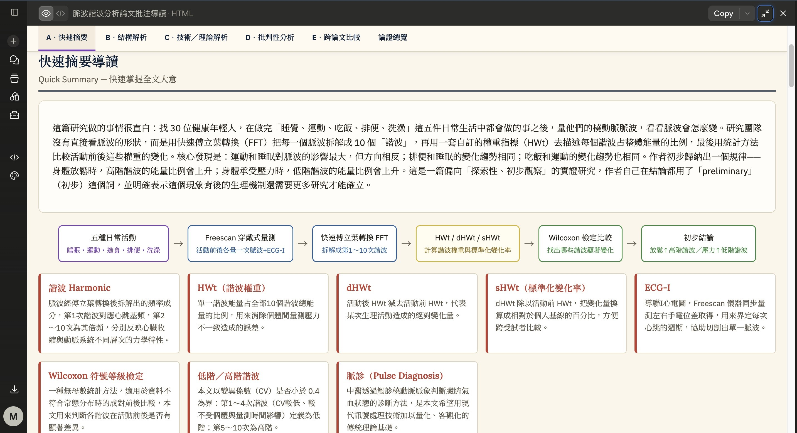

Threads｜把論文交給 AI 生成 HTML 導讀頁：知識地圖、雙欄批註與跨論文比較 prompt
Threads｜把論文交給 AI 生成 HTML 導讀頁
這則 Threads 由 Move & Model | 跨界實驗室分享，主題是把論文交給 AI 生成更適合閱讀的網頁，而不是只做條列摘要。貼文把完整 prompt 拆成內容架構、HTML 輸出規格與視覺設計要求。

公開貼文重點
首則貼文說：把論文丟給 AI 做成網頁，讓 AI 做出圖示化知識地圖、單詞卡片、概念解析，易讀性比純重點整理更高。
後續作者留言提供 prompt：要求 AI 閱讀論文、整理各 section 重點；若有引用文獻，要說明原文如何描述該文獻；回答必須基於本文內容，不得臆測。
可見數據：約 732 次瀏覽、5 個反應、3 則留言、2 次轉發、4 次分享。
Prompt 架構
內容架構 A-E：
- A 快速摘要：導讀區，含知識地圖、單詞卡片、概念解析。
- B 結構解析：文章整體框架。
- C 技術/理論解析：方法論、模型設計、理論基礎細節。
- D 批判性分析：優缺點檢視與建議。
- E 跨論文比較：搜尋 2-3 篇同領域相似論文，比較研究方法與實驗結果異同，並給出綜合結論。
輸出要求是單一 `.html` 檔案，包含頂部導覽、五色圖例、sticky 章節導覽、左右雙欄、英中對照、逐段中文批註、底部論證總覽，以及 E 項比較區。
設計要求：深海軍藍導覽列、米白底、五色高亮、正文 Lora、介面 IBM Plex Sans、繁體中文、行動端單欄。
圖片 OCR / 版面
截圖標題為 `脈波譜波分析論文批注導讀 HTML`。導覽列包括：`A・快速摘要`、`B・結構解析`、`C・技術／理論解析`、`D・批判性分析`、`E・跨論文比較`、`論證總覽`。
畫面主區是 `快速摘要導讀 / Quick Summary — 快速掌握全文大意`，下方有知識流程圖：五種日常活動 → Freescan 穿戴式量測 → 快速傅立葉轉換 FFT → HWt / dHWt / sHWt → Wilcoxon 檢定比較 → 初步結論。再下方是單詞卡，如 `諧波 Harmonic`、`HWt（諧波權重）`、`dHWt`、`sHWt（標準化變化率）`、`ECG-I`、`Wilcoxon 符號等級檢定` 等。
保存價值與使用邊界
這是一個很實用的研究閱讀 workflow：把論文拆成視覺導航、概念卡、論證骨架與批判分析，確實比單純摘要更容易回看與教學。
但使用時要保留兩個邊界：
- `E 跨論文比較` 需要模型能可靠搜尋或使用外部工具，否則容易編造文獻。建議要求附 DOI / arXiv / 出版資訊，並人工抽查。
- 若要「引用文獻的具體描述方式」，應把論文全文與 reference context 提供給模型；否則只能說明本文內可見的引用脈絡。
建議加上的安全 prompt：
```text
若無法從本文或可查證來源確認，請標示「未能確認」，不要補寫不存在的文獻、數據、年份或 DOI。
```